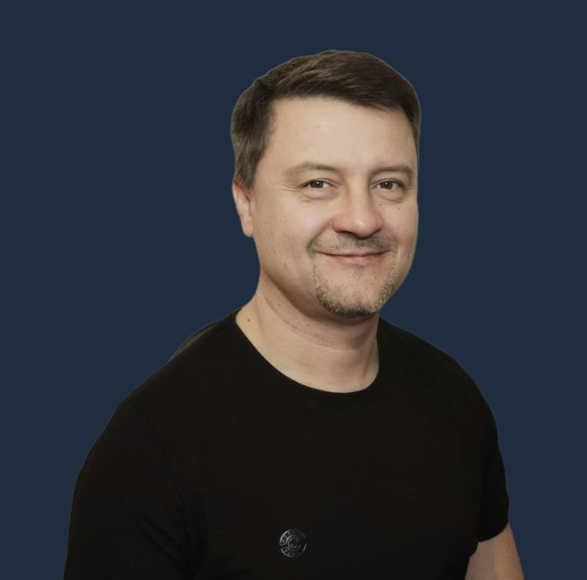

О разработчике веб - приложения

Приветствую! 😄
Меня зовут Maksym Chukhrai, и я - разработчик веб-приложений. Моя страсть к созданию уникальных и эффективных цифровых решений вдохновляет меня каждый день. Я верю, что технологии способны сделать наш мир лучше, и стремлюсь внести свой вклад в этот процесс.
Мои навыки и экспертиза
- Frontend и Backend. Работаю как с фронтендом (HTML, CSS, JavaScript, React), так и с бэкендом (Node.js, Express) для создания полноценных веб-приложений.
- React и Redux. Строю масштабируемые и модульные пользовательские интерфейсы с использованием библиотеки React.
- Базы данных: Опыт работы с различными базами данных, включая MySQL и MongoDB, гарантирует эффективное хранение и управление данными.
- RESTful API. Разработка и интеграция API для обеспечения взаимодействия между клиентской и серверной частями приложения.
- Оптимизация производительности. Специализируюсь на создании быстрых и оптимизированных веб-приложений, что подтверждают результаты тестов качества кода от Google PageSpeed Insights.
Моя миссия
Моя цель - не просто создавать код, а строить эффективные решения, которые соответствуют уникальным потребностям каждого проекта. Я стремлюсь к тому, чтобы мои работы не только удовлетворяли технические требования, но и доставляли пользовательскую радость и улучшали бизнес-процессы.
Почему следует выбрать меня
- Профессионализм и Точность. Моя работа основана на высоких стандартах качества и внимании к деталям.
- Индивидуальный подход. Я стремлюсь понять ваш бизнес, цели и проблемы, чтобы предоставить вам именно то веб-приложение, которое вам нужно.
- Качество. Я пишу веб-приложения только на чистом коде, не используя конструкторы сайтов, благодаря чему приложения имеют высокую скорость работы, отказоустойчивость и не требуют постояного вмешательства в код, максимально адаптированы к Search Engine Optimization (SEO).
- Открытость к сотрудничеству. Я ценю открытость и сотрудничество с заказчиком на всех этапах разработки.
О проекте по перетяжке мебели
В данном приложении мной было выполнено следующее: концепция, дизайн-макет, написание контента, адаптивная вёрстка, программирование на JavaScript and PHP и деплой на хостинг.
Контакты
Если у вас есть идея для веб-приложения или вы ищете разработчика для вашего проекта, не стесняйтесь связаться со мной. Да прибудет с вами позитив! 💯